Literacy · 2026
1,000 Book Drive
600 books collected and 88 delivered to 3 elementary schools’ CHEW programs, each with handwritten comprehension questions.
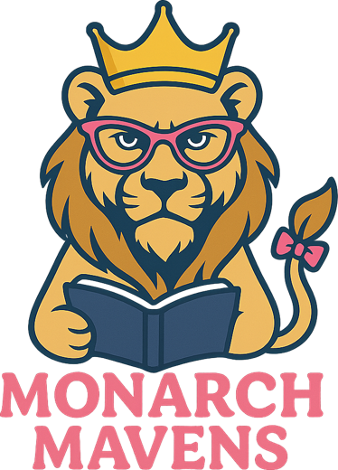
Mentorship and service for freshman and sophomore girls. Founded by Jessie Olan, Class of 2028.
When Jessie Olan saw Northside’s clubs dying out and almost no freshman girls joining, she started a group to show them the way, just like her older brother once did for her. Today Monarch Mavens is 53 girls strong.
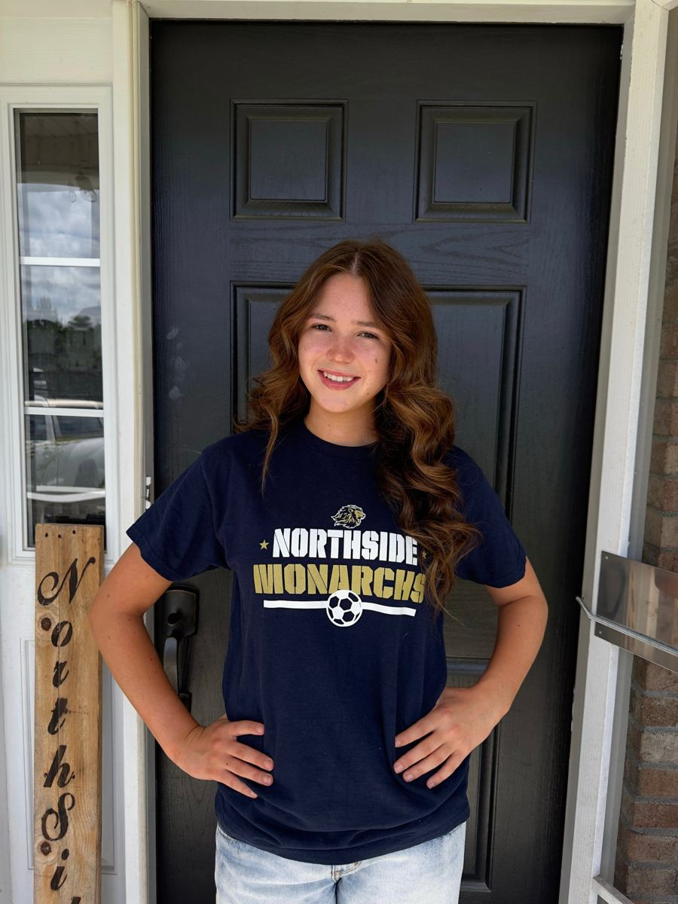
Monarch Mavens is collecting children’s books for students in Onslow County school CHEW programs. Every book goes home with a child, along with comprehension questions handwritten by a Maven.
Students in the CHEW program take home a weekend snack bag. Now they take home a book too. Because every book carries questions written just for it, we’re sharing more than books. We’re building reading comprehension and critical thinking.
Businesses and organizations: you can donate books, sponsor a box of books, or host a collection bin. Email jessieolan88@gmail.com and Jessie will pick the books up.
Anyone is welcome. All ages are encouraged to play, and there’s no entry fee. To play, bring one book or one canned good.
Every player needs to sign a waiver. To sign up, email Jessie at jessieolan88@gmail.com and she’ll send the waiver over.
10 AM – 2 PM · The Commons tennis courts
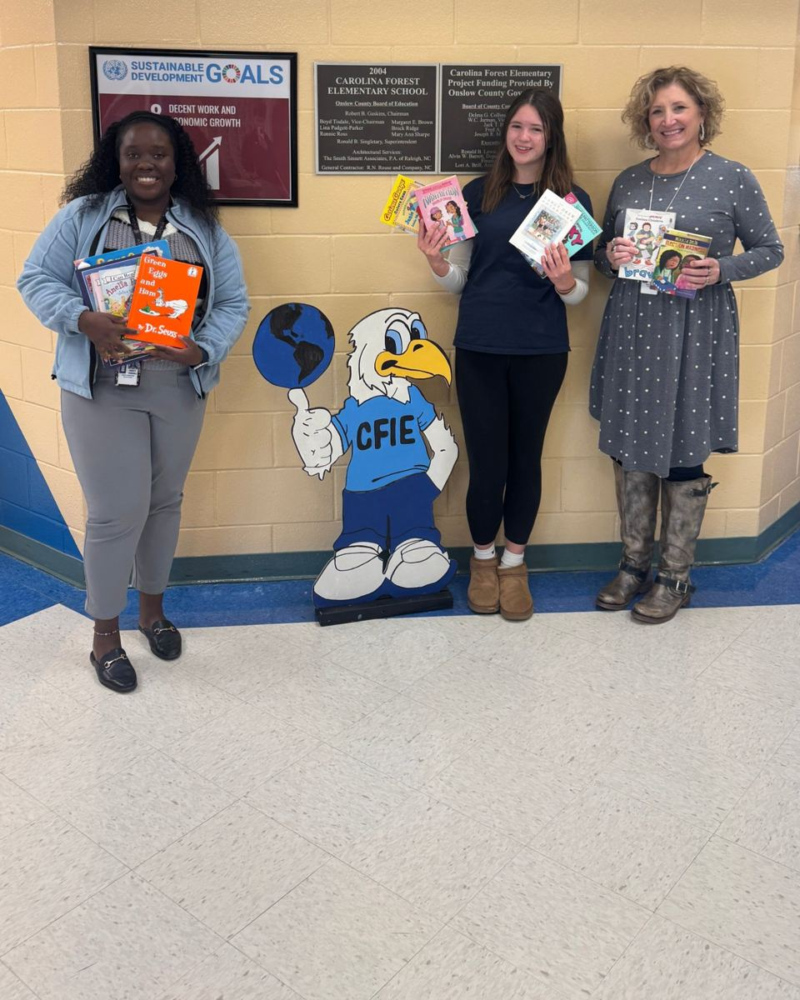
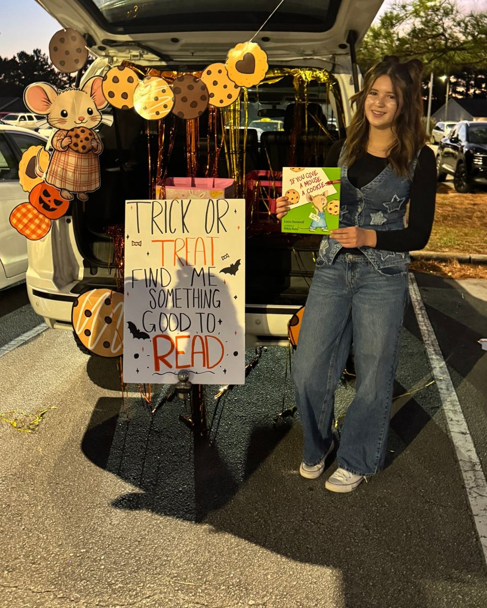
A mentorship and service club for freshman and sophomore girls at Northside High School. It’s easier to find your seat at the table when you walk in with a mentor and a friend.
Jessie Olan had an amazing guide in high school: her older brother, his class valedictorian, who pulled her into club after club. “Come join this one, do this one, try this one.” She soon realized most students around her never got that push and didn’t even know these opportunities existed.
By her sophomore year, Northside’s clubs were dying out, with almost no one left in them, and she knew she couldn’t revive them on her own. So she started a group for the incoming freshman girls to show them what her brother had shown her. It worked. Her junior year, she opened it up to freshman and sophomore girls, and Monarch Mavens grew into the program it is today, from 32 members to 53.
Freshman year comes with a flood of new opportunities, and it’s easy to feel overwhelmed. Monarch Mavens helps girls make the jump from middle school to high school. We join clubs together, volunteer together and build college-ready résumés together.
We work closely with our school’s CHEW program and push our members toward Northside’s academic teams like Science Olympiad, Odyssey of the Mind and Battle of the Books. With the Mavens’ help, Northside’s Science Olympiad team grew from 4 competitors to 16.
Founder & President: Jessie Olan · Advisor: Ms. Falkowsky
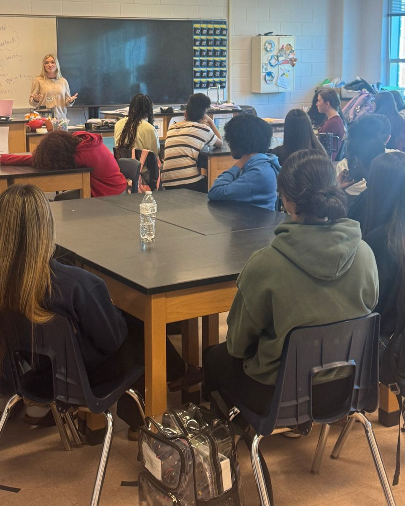
We talk about GPA, time management, scholarships and career planning, and how to build an application that stands out.
Drives, holiday projects and volunteer days that support CHEW students, teachers, nursing home residents and families in our community.
Each member writes a letter to herself at the start of the year and reads it at the end to see how far she’s come.
A record of Monarch Mavens projects and service, with more on the way.
600 books collected and 88 delivered to 3 elementary schools’ CHEW programs, each with handwritten comprehension questions.
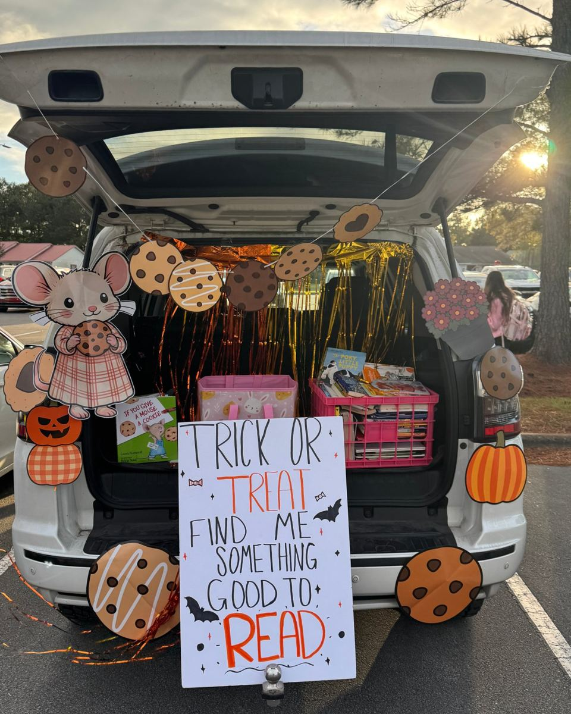
An “If You Give a Mouse a Cookie” trunk that gave 70 free books to kids in our community.
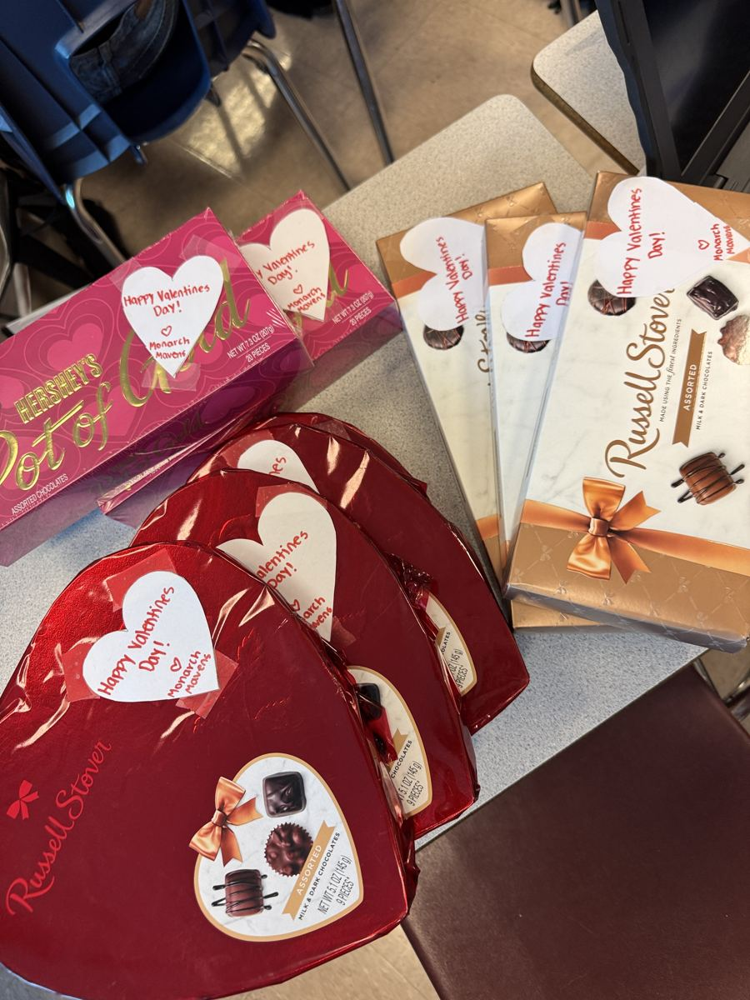
We put Valentine’s candy in Northside’s CHEW bags so every student had a valentine, either for someone special or just for themselves.
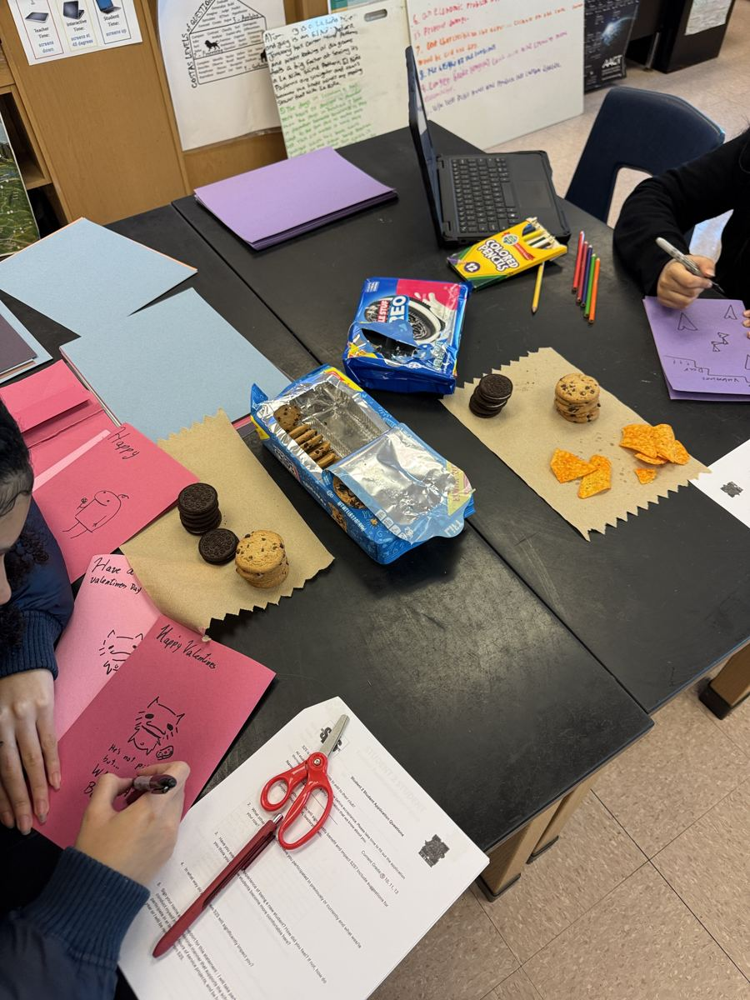
Handmade Thanksgiving, Christmas and Valentine’s Day cards for local nursing home residents.
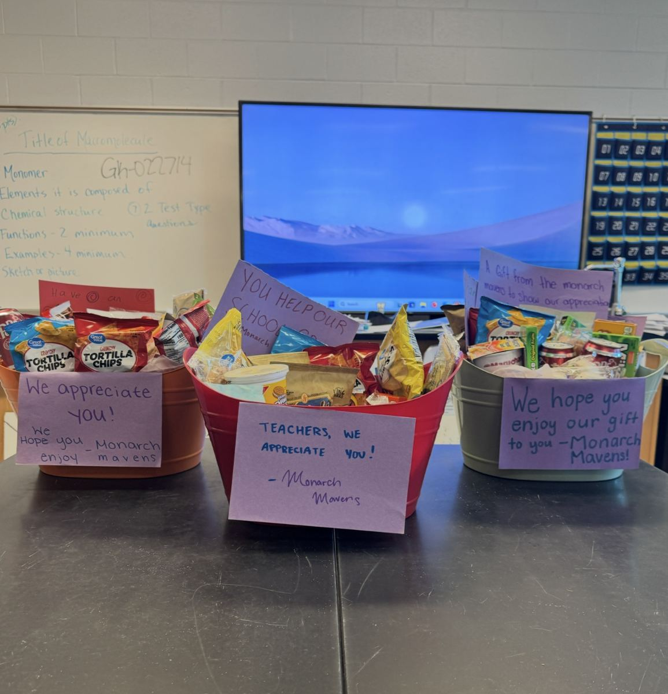
Snack baskets for the teachers’ lounge to thank the staff who help our school run.
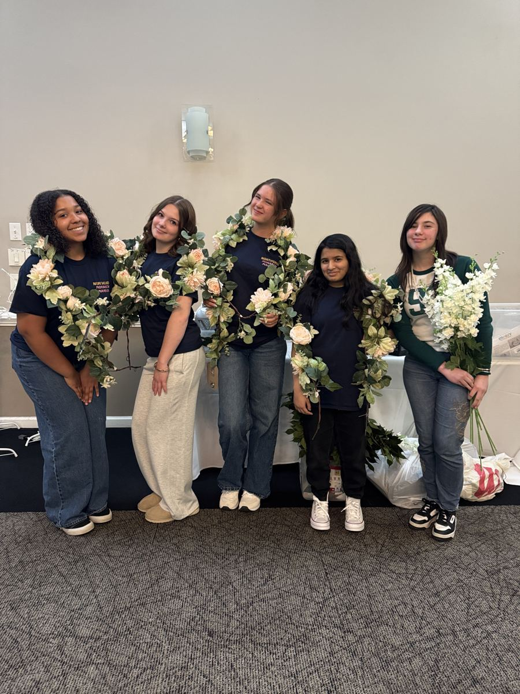
Mavens helped decorate and set up for Northside’s prom.
Schools, organizations and businesses in our community can ask Monarch Mavens for volunteers, invite us to an event, or come speak to our girls.
Tell us who you are, what you need, when it is and how many volunteers would help. Jessie will get back to you.
Or email jessieolan88@gmail.com
Help us reach 1,000 books for students in CHEW programs. Children’s and early-reader books are perfect.
Free pickup: email Jessie at jessieolan88@gmail.com and she’ll come pick up your books.
Share your career, college path or story with our members. We’ve hosted a Miss NC contestant, the county STEM coordinator and scholarship-winning alumni.
Each year the Mavens adopt a child from the Angel Tree. Businesses can help by donating clothing, gift cards or gifts for our angel.
Join the pickleball tournament on Dec 5 (all ages welcome, entry is one book or canned good), sponsor it, or share the book drive with your network. Email Jessie to get the player waiver.
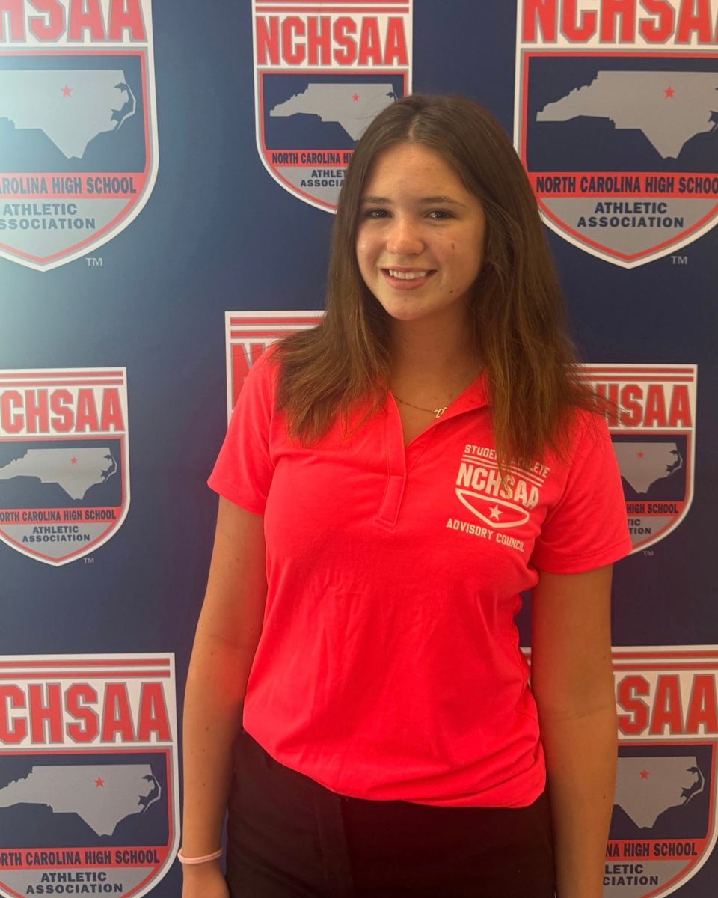
Jessie Olan started Monarch Mavens her sophomore year at Northside High School to give younger girls the same guidance her older brother gave her. Today she leads 53 Mavens, runs the 1,000 Book Drive, and brings in guest speakers to help younger girls plan for college and careers.
For help requests, book donations, sponsorships, speaking or joining the club, reach out and we’ll get back to you.